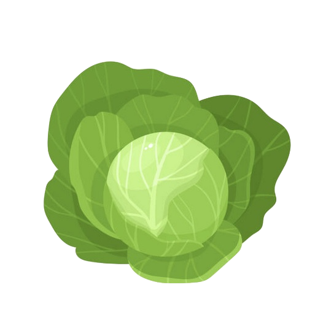
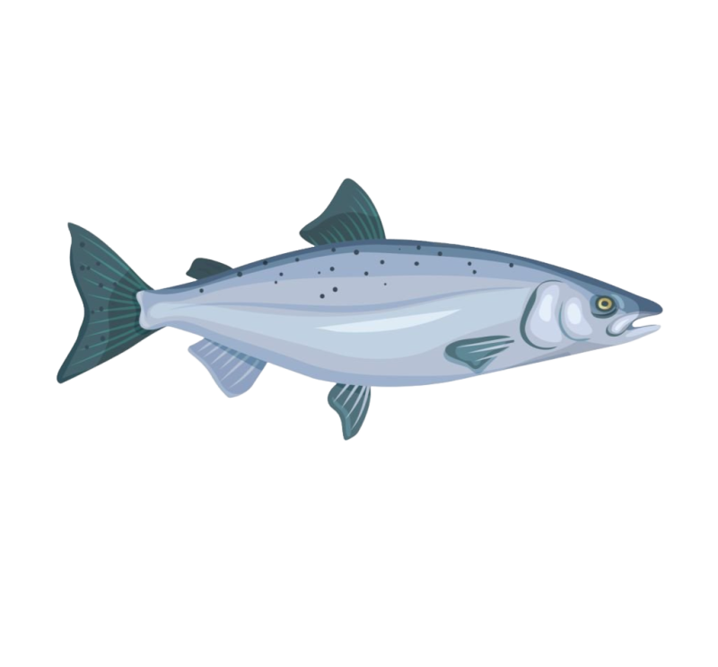
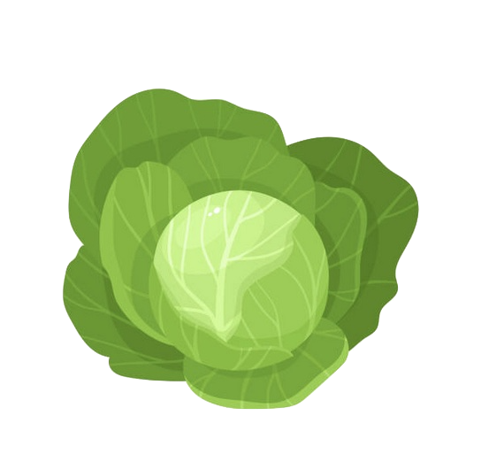
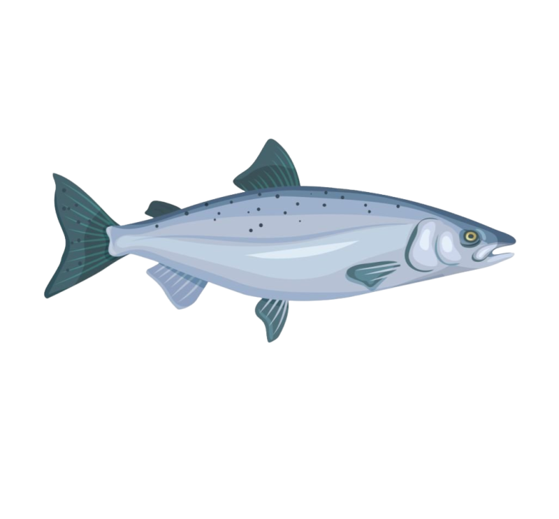

Que mangeras-tu aujourd'hui ?
Cliques sur ton ingrédient
.png) 



Poulet rôti simple
Ingrédients: huile végétale 1 poulet
Préchauffer le four à 190°. Prendre le poulet et le "masser" avec de l'huile, partout, même sous les ailes. Laisser la bride. Le poser dans un plat et le mettre au four pendant 1 h 30 (ou 2 h si c'est un bio). Important : ne pas le piquer avec une fourchette ou un couteau, ne pas le retourner, ne plus le toucher, une fois enfourné ! Il cuit dans sa peau, comme dans un film étirable sous-vide (ne pas percer la peau).
Une entrecôte à damner un saint
Ingrédients: 0.5 bouquet de persil frisé 1 entrecôte pour 2 (boucher)
Étaler une bonne pincée de gros sel de chaque côté de l'entrecôte et laisser reposer sur une assiette pendant une quinzaine de minutes. Pendant ce temps, laver et hacher le persil. En prendre la moitié et étaler sur la pièce de viande. Poêler 5 à 10 mn selon le goût. Parsemer du reste de persil et laisser tiédir 3 mn. Servir avec un taboulé (fait avec l'autre moitié du bouquet de persil).